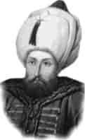

II. SELİM
Babası : Kanuni Sultan Süleyman
Annesi : Hürrem Sultan
Doğumu : 28 Mayıs 1524
Vefatı : 15 Aralık 1574
Saltanatı : 1566 - 1574 (8 yıl)
II. Selim, orta boylu, alnı açık, mavi gözlü, ince kaşlı ve sarışın bir padişahtı. Zamanında gerçekleşen önemli olaylardan bazıları şunlardır: Komşu devletlerle barış anlaşmaları yapıldı. Endonezya’ya denizden sefere çıkıldı.
Hindistan ve civarındaki Müslüman hükümdarlara istekleri üzerine yardımlarda bulunuldu. Bir Türk gölü haline gelen Akdeniz’deki Kıbrıs korsanları, devamlı devletin donanmasına ve ticaret gemilerine zarar verdiğinden Kıbrıs’ın fethine karar verildi. Lala Mustafa Paşa tarafından Kıbrıs bir buçuk yıl içinde tamamen fethedildi. Kıbrıs’ın imdadına gelen haçlı donanması İnebahtı’daki Türk donanmasını yakınca, padişah üzüntüsünden günlerce uyuyamadı. Çok kısa bir zaman sonra eski donanmadan kat kat üstün yeni bir donanma yapılıp yine Akdeniz’e açıldı. Bir yıl içinde tam yüz elli sekiz gemi ile yeni donanma denize açılınca, Venedikliler sanki galip değil de mağlup bir devletmişçesine bir anlaşma imzalamak mecburiyetinde kaldılar. Ayasofya Camii yeniden onarıldı. Selimiye Camii o devrede inşa edildi. Kırım Hanlığı’na, Rusya seferine çıkma izni verildi ve Rusya vergiye bağlandı. Tunus şehri fethedildi ve bütün Tunus, Osmanlı topraklarına katıldı. II. Selim de babası gibi şairdi.
Babasından 14 892.000 km2 olarak devraldığı İmparatorluk topraklarını, 15.162.000 km2 olarak bırakmıştır. 15 Aralık 1574 günü vefat etmiş, dedesi Yavuz gibi ancak sekiz yıl padişahlık yapmıştır. Ayasofya’daki türbesine gömülmüştür.
Erkek çocukları: III. Murat, Abdullah, Osman, Mustafa, Süleyman, Mehmet, Mahmut, Cihangir.
Kız çocukları: Fatma, Şah, Cevherhan, Esma.